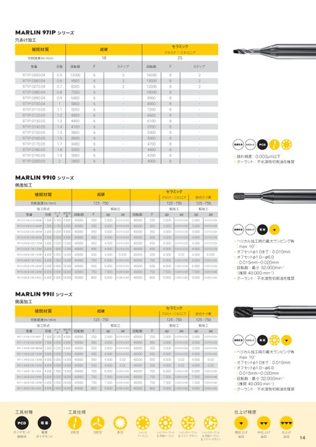

p.14切削加工条件表（続き）

MARLIN971Pシリーズ
穴あけ加工
超硬 被削材質 セラミック 超硬 セラミック
アルミナ/ジルコニア
18 切削速度(m/min) 18 25 25
回転数 型番 ステップ 刃径 回転数 回転数 ステップ ステップ 回転数 ステップ
12000 6 971P.0050.04 2 0.5 12000 16000 6 8 2 16000 8
9500 6 971P.0060.04 2 0.6 13000 6 8 2 13000 8
8200 6 971P.0070.04 2 0.7 12000 6 8 2 12000 8
7200 6 971P.0080.04 0.8 10000 6 8 10000 8
6400 6 971P.0090.04 0.9 6400 8900 6 8 8900 8
5800 6 971P.0100.04 1 5800 8000 6 8 8000 8
5200 6 971P.0110.05 1.1 5200 7200 6 8 7200 8
4800 6 971P.0120.05 1.2 4800 6600 6 8 6600 8
4400 6 971P.0130.05 1.3 4400 6100 6 8 6100 8
4100 6 971P.0140.05 1.4 4100 5700 6 8 5700 8
3800 6 971P.0150.05 1.5 3800 5300 6 8 5300 8
3600 6 971P.0160.05 1.6 3600 5000 6 8 5000 8
3400 6 971P.0170.05 1.7 3400 4700 6 8 4700 超硬合金 8 セラミック PcD 超硬合金 セラミック PcD
3200 6 971P.0180.05 1.8 3200 4400 6 8 4400 8
3000 6 971P.0190.05 1.9 3000 4200 6 8 4200 振れ精度:0.003μm以下 8 振れ精度:0.003μm以下
2800 6 971P.0200.05 2 2800 4000 6 8 4000 クーラント:不水溶性切削油を推奨 8 クーラント:不水溶性切削油を推奨
MARLIN9910シリーズ
側面加工
超硬 被削材質 セラミック 超硬 セラミック
アルミナ/ジルコニア 炭化ケイ素
125-750 切削速度(m/min) 125-750 125-750 125-750 125-750 125-750
粗加工 加工形式 粗加工 粗加工 粗加工 粗加工 粗加工
回転数 型番 ap 刃径 ae コーナ切れ刃 回転数 回転数 apF ae ap ap ae 回転数 ae ap ae ap ae
40000 250 9910.0100.010.040M 2.0000.010-0.020 1.000 0.1004.000 40000 250 2.000 2500.010-0.020 2.000 0.010-0.020 2.000 0.010-0.02040000 250 2.0000.010-0.0202.0000.010-0.020
40000 300 9910.0150.015.060M 3.0000.010-0.02040000 1.5000.1506.000 300 3.0003000.010-0.020 3.0003.0000.010-0.0200.010-0.02040000 300 超硬合金 3.0000.010-0.0203.0000.010-0.020 電着 超硬合金 電着
40000 3509910.0200.020.080M 3.0000.010-0.02040000 2.0000.2008.000 350 3.0003500.010-0.020 3.0003.0000.010-0.0200.010-0.02040000 350 3.0000.010-0.0203.0000.010-0.020 セラミック セラミック
40000 4009910.0250.050.080M 4.0000.010-0.02040000 2.5000.5008.000 400 4.0004000.010-0.020 4.0004.0000.010-0.0200.010-0.02040000 400 ヘリカル加工時の最大ランピング角 4.0000.010-0.0204.0000.010-0.020 ヘリカル加工時の最大ランピング角
40000 4509910.0300.020.120M 4.5000.010-0.02040000 3.0000.20012.000 450 4.5004500.010-0.020 4.5004.5000.010-0.0200.010-0.02040000 450 :max10° 4.5000.010-0.0204.5000.010-0.020 :max10°
40000 450 9910.0300.100.120M 4.5000.010-0.02040000 3.0001.00012.000 450 4.5004500.010-0.020 4.5004.5000.010-0.0200.010-0.02040000 450 オフセットφ1.0まで:0.010mm 4.5000.010-0.0204.5000.010-0.020 オフセットφ1.0まで:0.010mm
40000 5509910.0400.050.160M 4.500 0.0204.000 0.50016.000 40000 550 4.500550 0.02 4.500 4.500 0.020 0.020 40000 550 オフセットφ1.0〜φ6.0 4.500 0.02 4.500 0.020 オフセットφ1.0〜φ6.0
40000 700 9910.0400.150.160G 6.0000.020-0.03040000 4.0001.50016.000 700 6.0007000.020-0.030 6.0006.0000.020-0.0300.020-0.03040000 700 :0.015mm〜0.020mm 6.0000.020-0.0306.0000.020-0.030 :0.015mm〜0.020mm
40000 6509910.0500.050.200M 6.0000.020-0.03040000 5.0000.50020.000 650 6.0006500.020-0.030 6.0006.0000.020-0.0300.020-0.03040000 650 回転数:最小32,000min-1 6.0000.020-0.0306.0000.020-0.030 回転数:最小32,000min-1
40000 7509910.0600.050.240M 7.5000.020-0.04040000 6.0000.50024.000 750 7.5007500.020-0.040 7.5007.5000.020-0.0400.020-0.04040000 750 (推奨40,000min-1) 7.5000.020-0.040 7.500 0.020-0.040 (推奨40,000min-1)
40000 8009910.0600.200.240G 9.0000.030-0.06040000 6.0002.00024.000 800 9.0008000.030-0.060 9.0009.0000.030-0.0600.030-0.06040000 800 クーラント:不水溶性切削油を推奨 9.0000.030-0.060 9.000 0.030-0.060 クーラント:不水溶性切削油を推奨
MARLIN9911シリーズ
側面加工
超硬 被削材質 セラミック 超硬 セラミック
アルミナ/ジルコニア 炭化ケイ素
125-750 切削速度(m/min) 125-750 125-750 125-750 125-750 125-750
粗加工 加工形式 粗加工 粗加工 粗加工 粗加工 粗加工
回転数 型番 ap 刃径 ae コーナ切れ刃 回転数 回転数 apF ae ap ap ae 回転数 ae ap ae ap ae
40000 250 9911.0100.010.040F 2.0000.010-0.020 1.000 0.1004.000 40000 250 2.000 2500.010-0.020 2.000 0.010-0.020 2.000 0.010-0.02040000 250 超硬合金 2.0000.010-0.0202.0000.010-0.020 セラミック 電着 超硬合金 セラミック 電着
40000 3009911.0150.020.060M 3.0000.010-0.02040000 1.5000.2006.000 300 3.0003000.010-0.020 3.0003.0000.010-0.0200.010-0.02040000 300 3.0000.010-0.0203.0000.010-0.020
40000 3509911.0200.020.080M 3.0000.010-0.02040000 2.0000.2008.000 350 3.0003500.010-0.020 3.0003.0000.010-0.0200.010-0.02040000 350 ヘリカル加工時の最大ランピング角 3.0000.010-0.0203.0000.010-0.020 ヘリカル加工時の最大ランピング角
40000 450 9911.0300.020.120M 4.5000.010-0.02040000 3.0000.20012.000 450 4.5004500.010-0.020 4.5004.5000.010-0.0200.010-0.02040000 450 :max10° 4.5000.010-0.0204.5000.010-0.020 :max10°
40000 550 9911.0400.020.160M 4.500 0.024.000 0.20016.000 40000 550 4.500550 0.02 4.500 4.5000.02 0.0240000 550 オフセットφ1.0まで:0.010mm 4.500 0.02 4.500 0.02 オフセットφ1.0まで:0.010mm
40000 5509911.0400.050.160M 4.500 0.024.000 0.50016.000 40000 550 4.500550 0.02 4.500 4.5000.02 0.0240000 550 オフセットφ1.0〜φ6.0 4.500 0.02 4.500 0.02 オフセットφ1.0〜φ6.0
40000 7009911.0400.150.160G 6.0000.020-0.03040000 4.0001.50016.000 700 6.0007000.020-0.030 6.0006.0000.020-0.0300.020-0.03040000 700 :0.015mm〜0.020mm 6.0000.020-0.0306.0000.020-0.030 :0.015mm〜0.020mm
40000 7509911.0600.020.240M 7.5000.020-0.04040000 6.0000.20024.000 750 7.5007500.020-0.040 7.5007.5000.020-0.0400.020-0.04040000 750 回転数:最小32,000min-1 7.5000.020-0.0407.5000.020-0.040 回転数:最小32,000min-1
40000 7509911.0600.050.240M 7.5000.020-0.04040000 6.0000.50024.000 750 7.5007500.020-0.040 7.5007.5000.020-0.0400.020-0.04040000 750 (推奨40,000min-1) 7.5000.020-0.040 7.500 0.020-0.040 (推奨40,000min-1)
40000 8009911.0600.200.240G 9.0000.030-0.06040000 6.0002.00024.000 800 9.0008000.030-0.060 9.0009.0000.030-0.0600.030-0.06040000 800 クーラント:不水溶性切削油を推奨 9.0000.030-0.060 9.000 0.030-0.060 クーラント:不水溶性切削油を推奨
工具仕様 工具材種 工具仕様 仕上げ精度 仕上げ精度
PCD 電着
2枚刃 ダイヤモンド 焼結体 3枚刃 ダイヤモンド 電着 多刃 クーラント シャンク 2枚刃 シャンククーラント &先端クーラント 3枚刃 &ワイパーデザイン シャンククーラント多刃 シャンククーラント &先端クーラント クーラント シャンク シャンククーラント &先端クーラント 粗仕上げ 品位 &ワイパーデザイン シャンククーラント 中仕上げ 品位 シャンククーラント &先端クーラント 仕上げ 品位 粗仕上げ 品位 中仕上げ 品位 仕上げ 品位
&ワイパーデザイン &ワイパーデザイン 14 14